Program Goal
For this project, I developed an Artificial Intelligence program that utilizes minimax, and alpha-beta pruning strategies to solve a 3D Tic-Tac-Toe game. The AI's moves are determined by a calculated heuristic value based on game progression. The AI is able to beat AI player with randomness, as well as knowing the winning and loss positions in next move. The game strategy is similar to traditional Tic-Tac-Toe game, but the game board for the 3D version is 4x4x4 with in total 76 winning lines. I have included detailed discussion on methods and their implementations in the sections below.
Method and Implementation
My code consists of 3 parts served as my AI strategy:
1. Minimax and Alpha-Beta Pruning
myAIAlgorithm() is the driver method of my AI algorithm, where inside it calls helper functions to determine the most optimal next move based on game progression. Below is the pseudocode of my algorithm: 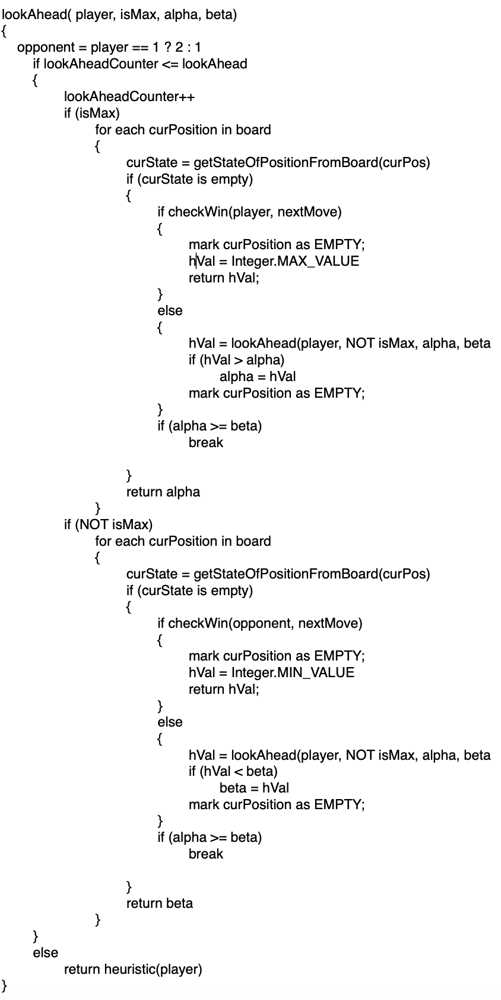
- winMove(player)
- blockMove(player)
It analyzes if there is any winning line has three cells occupied with one empty cell. If the answer is yes, then return the position of the empty cell.
Similar to the winMove method, this method returns the position of the empty cell when the opponent has occupied a winning line with three cells occupied.
I have implemented one single function that combines minimax algorithm and alpah-beta pruning. It crawls through the game board to generate all possible moves in the available spaces based on the current board in response to possible move made by opponent, and uses alpha-beta pruning to conserve computation cost and avoid the search tree getting too big. My algorithm always picks the most optimal move, and when the minimum best value of the maximizer is already larger than the maximum best value of the minimizer, then we can prune the search space by alpha-beta values.
2. Heuristic Value Calculation
computeHeuristics(player) is called when the minimax method(lookAhead) reaches the max depth. Check the pseudo code:
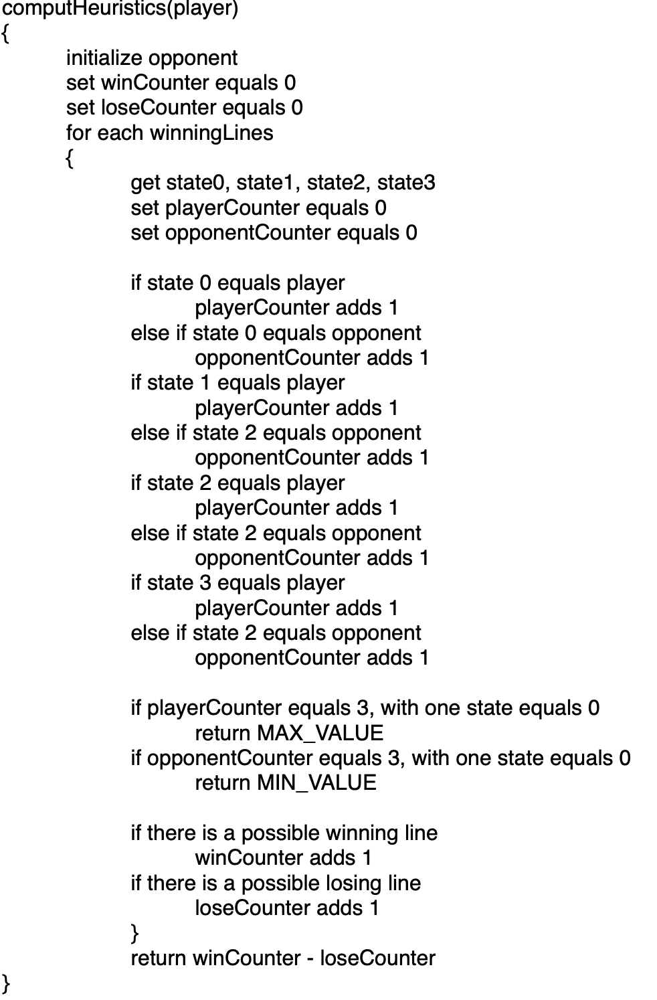
The basic idea is to count the difference between all possible winning lines and losing lines, which are named winCounter and loseCounter respectively. There are different cases presented.
- There are four player nodes on a winning line.
- There are four opponent nodes on a winning line.
- Otherwise, return the difference between winCounter and loseCounter
Our function would then return Integer.MAX_VALUE
Our function would then return Integer.MIN_VALUE
Experiment and Results
I did two experiments to test my AI algorithm's performance. Following the set up below:
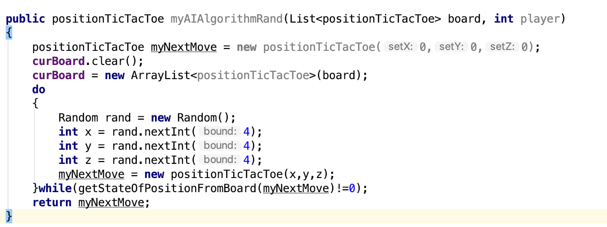
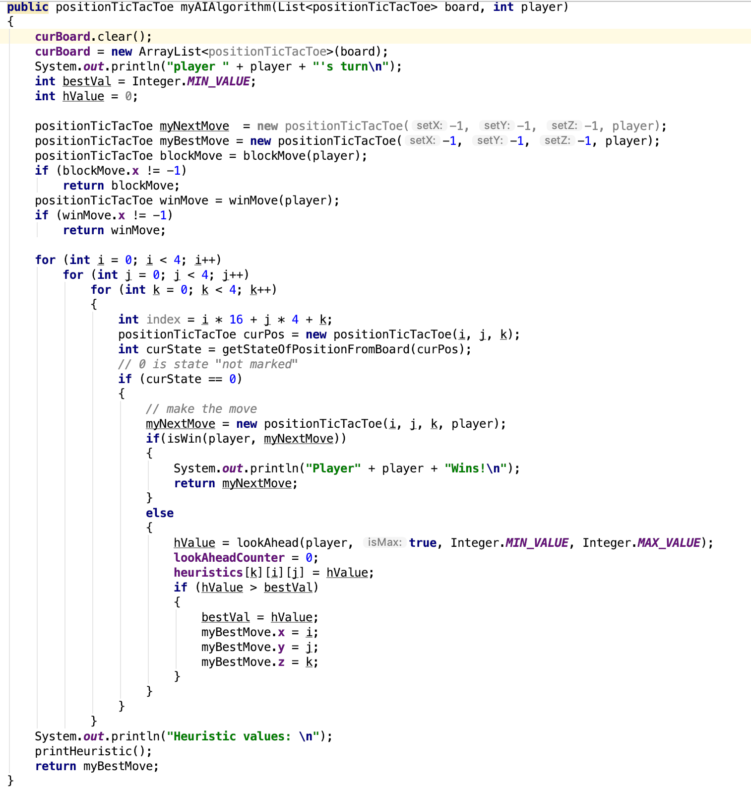
Please check out the Results part for details
- our AI vs the random AI
- The winning rate of our AI: 100 / 100 = 100%
- Some sample board layouts: 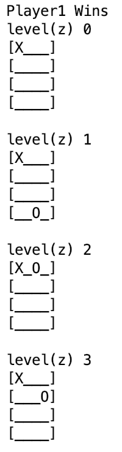 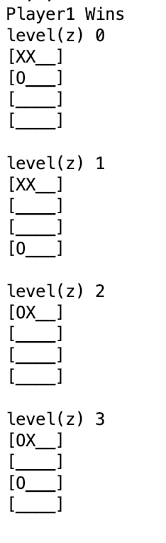
- Our AI vs our AI
- The winning rate of our AI is about 50 / 100 = 50%
- Some sample board layouts: 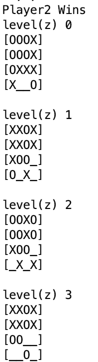 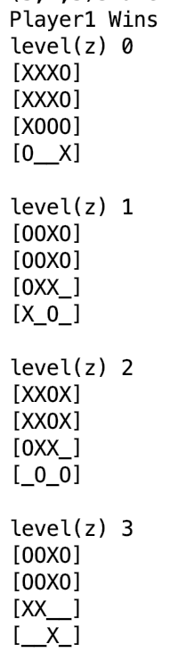
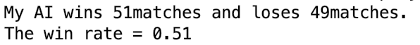>
Also, i set up a timer to help trace the time that my AI spent in each step.
As the following pictures shown, I used JAVA built in methods to record the start time and the end time of the minimad method, so that their difference is the time used in each evaluation step. For each time spent, i store them in a class private AyyayList to help compute the average time, as shown in the third picture.
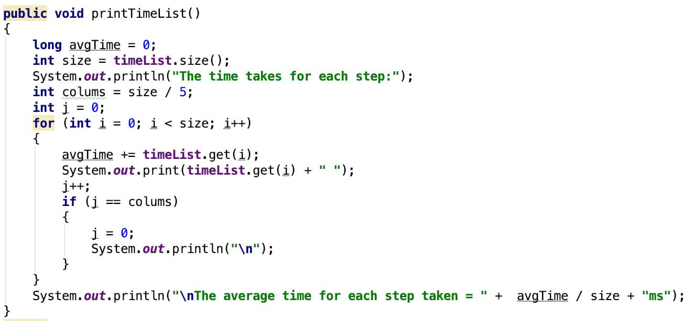 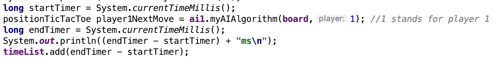Discussion
We see that when our AI is competing with a random AI, it has a good 100% winning rate based on 100 samples. When it's set to play against itself under the same setting, the winning rate is 50%. Statistically, it can be treated as a draw because either side doesn't outperforms the other side. For a specific sutuation as shown below, we can see that my ai successfully blocks the opponent's move to success by placing it to the last empty cell on the winning line of the opponent.
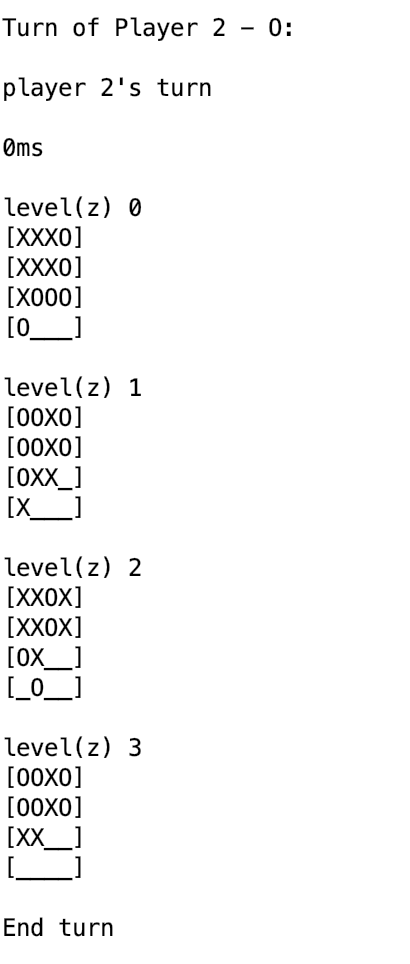 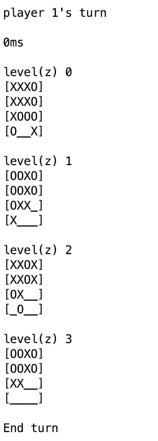We can observe that when the heuristic value equals to Integer.MIN_VAL, then it indicates that the opponent is likely to win if it chooses this cell, which is highly possible since we assume that our opponent would also act optimally. Our this situation, our AI has to choose between two possible moves. The first move is that if it can win in this turn, it would put it into the top priority and defeat its opponent. If there is no such situation presented, it will immediately try to block the opponent, preventing him/her from gaining advantage.
Conclusion
A game player powered by Aritificial Intelligence using Minimax, Alpha Beta Pruning was developed for this project. A key concept in the success of the AI player is calculating a Heuristic Value for potential moves in order to optimize AI's decisions.
When I started the project, I used a very simple method by subtracting all potential winning moves opponent can make from all potential winning options for my AI. The concept works at a fundamental level but is not competition ready, thus I have improved my heuristic value calcualtion as described in Method&Implementation section. Able to rely on concept of backtracking to traverse through all cells and evaluate minmax function for all empty cells is another crucial portion of my algorithm. For this one, The algorithm evaluates the moves that lead to a terminal state based on the players’ turn. It will choose the move with maximum score when it is my AI’s turn and choose the move with the minimum score when it is the opponent player’s turn. Using this strategy, minimax avoids losing to the opponent.
On top of that, Alpha-Beta pruning is implemented to trim unnecessary traversal of search tree to save time and computation power. I have enjoyed this project and looking forward to see how my AI competes with other teams' developments.
Credits and Bibliography